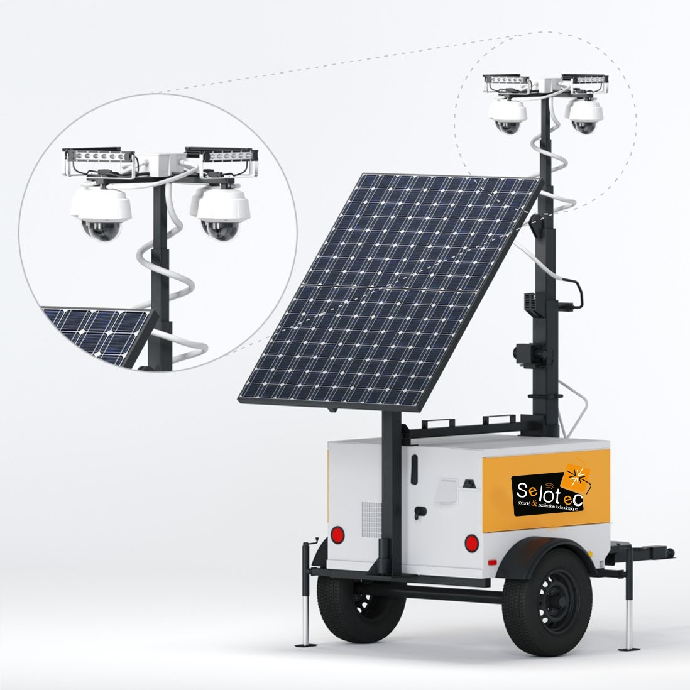

Unité de surveillance Mobile (USM)
Une Alimentation À Distance Fiable Pour Des Applications Robustes
Une Alimentation À Distance Fiable Pour Des Applications Robustes
Une Alimentation À Distance Fiable Pour Des Applications Robustes
Avec ses deux caméras, son enregistrement vidéo 24/7 et son accès en direct pour la surveillance à distance, la USM Mini affirme une présence intimidante qui peut compléter ou remplacer les services de gardiennage physique. Le Mini est délibérément conçu pour la flexibilité, construit pour s'adapter à votre choix de combinaison de caméras - vidéo traditionnelle, thermique/infrarouge, capture de plaque d'immatriculation, ou détection de mouvement - plus des options pour ajouter des lumières, des caméras supplémentaires, ou un panneau solaire pour les applications où l'alimentation électrique n'est pas facilement disponible.
Les options de caméra comprennent : vidéo haute définition, capture de plaque d'immatriculation et détection de mouvement
Peut prendre en charge des lumières supplémentaire
Fonctionne jusqu'à trois mois sans intervention humaine directe
Livré avec quatre caméras, mais peut en accueillir davantage
Offre des options pour les caméras thermiques, les radars et les lidars
Peut prendre en charge la technologie de reconnaissance des plaques d'immatriculation (LPR)
Comprend un haut-parleur d'avertissement audio unidirectionnel